CODING AGENTS AS PIXEL WORLD MODELS
traex/GPT-5.6-Sol · 0128
点击播放 · 原生 RGB 像素
逐轮保存的候选
回放视频、检查图与代码变化。
每份候选均可单独播放。实际图片检查记录在下方工具轨迹中。
候选 01播放与检查图
点击播放 · 原生 RGB 像素
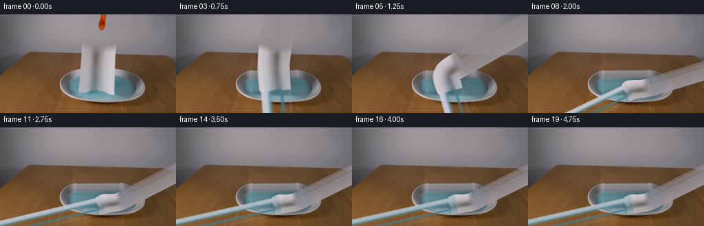
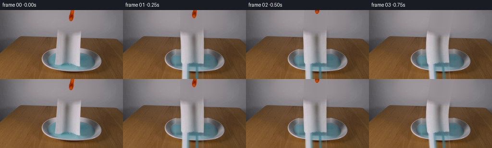
展开代码变化
--- 上一保存版本
+++ 本次保存版本
@@ -0,0 +1,234 @@
+from pathlib import Path
+import numpy as np
+import cv2
+from PIL import Image, ImageDraw
+import artifact_io
+
+ROOT = Path(__file__).resolve().parent
+W, H = 256, 144
+
+
+def smoothstep(x):
+ x = np.clip(x, 0.0, 1.0)
+ return x*x*(3.0-2.0*x)
+
+
+def soft_polygon(points, blur=0.65):
+ s = 4
+ m = np.zeros((H*s, W*s), np.uint8)
+ pts = np.round(np.asarray(points)*s).astype(np.int32)
+ cv2.fillPoly(m, [pts], 255)
+ m = cv2.resize(m, (W,H), interpolation=cv2.INTER_AREA)
+ if blur:
+ m = cv2.GaussianBlur(m, (0,0), blur)
+ return m.astype(np.float32)/255.0
+
+
+def reconstruct_background(src):
+ """Remove the two moving objects while preserving the locked photographic plate."""
+ base = src.copy().astype(np.float32)
+ # Row-wise continuation is especially stable for this shallow-depth, horizontal setup.
+ spans = []
+ for y in range(H):
+ if y <= 30:
+ spans.append((139,158))
+ elif 34 <= y <= 118:
+ # follows the actual soft paper silhouette, with room for its cast shadow
+ if y < 42: spans.append((115,171))
+ elif y < 79: spans.append((112,173))
+ else: spans.append((110,175))
+ else:
+ spans.append(None)
+ rng = np.random.default_rng(128)
+ for y, span in enumerate(spans):
+ if span is None: continue
+ x0,x1 = span
+ L=max(0,x0-4); R=min(W-1,x1+4)
+ c0=src[y,L].astype(np.float32); c1=src[y,R].astype(np.float32)
+ xs=np.arange(x0,x1+1)
+ t=(xs-L)/(R-L)
+ vals=c0[None,:]*(1-t[:,None])+c1[None,:]*t[:,None]
+ # Continue weak local texture rather than leaving a conspicuously smooth stripe.
+ if y >= 55 and y < 82:
+ texrow=src[y, max(0,L-18):L+1].astype(np.float32)
+ if len(texrow):
+ texture=texrow[(np.arange(len(xs))*5+2*y)%len(texrow)]
+ texture-=texture.mean(axis=0,keepdims=True)
+ vals += .18*texture
+ if y >= 83:
+ # the center is water/ceramic: retain only fine photographic grain
+ vals += rng.normal(0,.45,vals.shape)
+ base[y,x0:x1+1]=vals
+ # Feather both repaired areas into neighboring pixels.
+ repair=np.zeros((H,W),np.float32)
+ for y,span in enumerate(spans):
+ if span:
+ repair[y,span[0]:span[1]+1]=1
+ repair=cv2.GaussianBlur(repair,(0,0),1.6)[...,None]
+ base=src.astype(np.float32)*(1-repair)+base*repair
+ return np.uint8(np.clip(base,0,255))
+
+
+def make_source_alpha():
+ # Careful silhouette tracing of the towel in frame zero.
+ return soft_polygon([(119,38.5),(168.5,39.5),(168,57),(166.5,76),
+ (166,109),(163,114),(155,115),(146,112.5),
+ (139,111),(133,114),(126,112),(119,113),
+ (116.5,108),(117,84),(118.5,61)], .55)
+
+
+def composite(dst, rgb, alpha):
+ a=np.clip(alpha,0,1)[...,None]
+ return dst*(1-a)+rgb*a
+
+
+def curve_for_progress(p, settle=0.0):
+ """Material centreline, top-to-bottom. Bottom first contacts and stays in the dish."""
+ q=smoothstep(p)
+ # upper edge swings right while gravity shortens the projected sheet
+ top=np.array([143.2 + 35.0*q, 39.0 + 67.0*q + settle],np.float32)
+ bottom=np.array([142.5 - 2.0*q, 112.0 + 1.5*q + .25*settle],np.float32)
+ vv=np.linspace(0,1,301,dtype=np.float32)
+ C=top[None,:]*(1-vv[:,None])+bottom[None,:]*vv[:,None]
+ # transient S-buckle after release, becoming a shallow crumple on the water
+ buckle=np.array([-18.0*np.sin(np.pi*p)*(.35+.65*q)-3.0*q,
+ -5.2*np.sin(np.pi*p)+1.2*q],np.float32)
+ C += np.sin(np.pi*vv)[:,None]*buckle[None,:]
+ C[:,0] += (1.4*q)*np.sin(3*np.pi*vv)
+ C[:,1] += (1.0*q)*np.sin(2*np.pi*vv+0.5)
+ # Compute smooth local normal.
+ d=np.gradient(C,axis=0)
+ lens=np.maximum(np.linalg.norm(d,axis=1),1e-5)
+ N=np.stack([-d[:,1]/lens,d[:,0]/lens],axis=1)
+ # Sheet width is projected narrower as it turns toward horizontal and creases.
+ half=(24.7*(1-q)+14.0*q)*(1-.06*np.sin(2*np.pi*vv+0.4)*q)
+ return vv,C,N,half
+
+
+def warp_towel(src, source_alpha, p, settle=0.0, wet=0.0):
+ vv,C,N,half=curve_for_progress(p,settle)
+ yy,xx=np.mgrid[0:H,0:W].astype(np.float32)
+ # nearest centreline sample, followed by local tangent projection
+ # (301*36864 remains small and gives clean flexible-body geometry)
+ best=np.full((H,W),1e12,np.float32)
+ idx=np.zeros((H,W),np.int16)
+ for i in range(len(vv)):
+ ds=(xx-C[i,0])**2+(yy-C[i,1])**2
+ take=ds<best
+ best[take]=ds[take]; idx[take]=i
+ ci=C[idx]; ni=N[idx]; hi=half[idx]
+ lateral=(xx-ci[...,0])*ni[...,0]+(yy-ci[...,1])*ni[...,1]
+ u=.5+lateral/(2*hi+1e-6)
+ v=vv[idx]
+ mapx=(118.5+49.5*u).astype(np.float32)
+ mapy=(39.0+74.0*v).astype(np.float32)
+ tex=cv2.remap(src,mapx,mapy,cv2.INTER_CUBIC,borderMode=cv2.BORDER_REFLECT_101).astype(np.float32)
+ a=cv2.remap(source_alpha.astype(np.float32),mapx,mapy,cv2.INTER_LINEAR,
+ borderMode=cv2.BORDER_CONSTANT,borderValue=0)
+ a *= np.clip((hi-np.abs(lateral)+1.0)/1.25,0,1)
+ # Fold lighting travels with material coordinates. This adds volume without changing texture.
+ q=smoothstep(p)
+ fold=(2.5*np.sin(4*np.pi*v+0.7)+1.7*np.sin(7*np.pi*v+1.5))*q
+ transverse=2.0*np.sin(2*np.pi*u+1.2)*q
+ shade=fold+transverse
+ tex += shade[...,None]
+ # Water wicks into the material from its lower edge and blue-tints contact regions.
+ if wet>0:
+ wetfront=np.clip((v-(.98-.47*wet))/.16,0,1)*wet
+ blue=np.array([88,151,157],np.float32)
+ tex=tex*(1-.23*wetfront[...,None])+blue*.23*wetfront[...,None]
+ tex -= (3.0*wetfront)[...,None]
+ return np.clip(tex,0,255), np.clip(a,0,1), (C,N,half)
+
+
+def towel_shadow(curve, p):
+ C,N,half=curve
+ # projected soft shadow beneath the flexible sheet
+ poly=[]
+ for i in range(0,len(C),10): poly.append(C[i]+N[i]*(half[i]+1.5))
+ for i in range(len(C)-1,-1,-10): poly.append(C[i]-N[i]*(half[i]+1.5))
+ m=soft_polygon([(float(x+1.8),float(y+2.5)) for x,y in poly],0)
+ m=cv2.GaussianBlur(m,(0,0),2.8)
+ # strongest once the sheet is close to the dish
+ return m*(.12+.11*smoothstep(p))
+
+
+def draw_ripples(frame, amp, phase):
+ if amp <= .001: return frame
+ # Render at 4x for photographic anti-aliasing, clipped to the visible water ellipse.
+ S=4
+ overlay=np.zeros((H*S,W*S,4),np.uint8)
+ d=ImageDraw.Draw(Image.fromarray(overlay),'RGBA')
+ # use OpenCV directly for smooth elliptical highlights/shadows
+ rgba=overlay
+ center=(147*S,105*S)
+ for k in range(3):
+ r=9+10*k+phase*4
+ axes=(int(r*S),int((3.0+2.2*k+phase)*S))
+ a=int(np.clip(amp*(48-8*k),0,50))
+ cv2.ellipse(rgba,center,axes,0,188,352,(207,242,240,a),1*S,cv2.LINE_AA)
+ cv2.ellipse(rgba,(center[0],center[1]+S),axes,0,8,172,(39,102,111,a//2),1*S,cv2.LINE_AA)
+ rgba=cv2.resize(rgba,(W,H),interpolation=cv2.INTER_AREA)
+ # mask to water interior
+ y,x=np.mgrid[0:H,0:W]
+ water=(((x-148)/51.)**2+((y-105)/18.)**2 <= 1).astype(np.float32)
+ a=(rgba[...,3].astype(np.float32)/255*water)[...,None]
+ return frame*(1-a)+rgba[...,:3].astype(np.float32)*a
+
+
+def shifted_grabber(src, dy):
+ # Saturated orange/black tip at the top; a soft chroma-derived matte retains edge pixels.
+ yy,xx=np.mgrid[0:H,0:W]
+ region=(yy<30)&(xx>=139)&(xx<=158)
+ rgb=src.astype(np.float32)
+ chroma=rgb.max(2)-rgb.min(2)
+ orange=(rgb[...,0]-rgb[...,2])
+ mask=region*np.clip((chroma-7)/20,0,1)*np.clip((orange-5)/35,0,1)
+ # include dark central jaw only where surrounded by orange
+ dil=cv2.dilate(mask.astype(np.float32),np.ones((5,5),np.uint8))
+ dark=region*(rgb.mean(2)<70)*dil
+ mask=np.maximum(mask,dark*.75)
+ mask=cv2.GaussianBlur(mask.astype(np.float32),(0,0),.45)
+ M=np.float32([[1,0,0],[0,1,dy]])
+ tex=cv2.warpAffine(rgb,M,(W,H),flags=cv2.INTER_CUBIC,borderMode=cv2.BORDER_CONSTANT)
+ a=cv2.warpAffine(mask,M,(W,H),flags=cv2.INTER_LINEAR,borderMode=cv2.BORDER_CONSTANT)
+ return tex,a
+
+
+def main():
+ src=np.array(Image.open(ROOT/'first_frame.png').convert('RGB'),dtype=np.uint8)
+ base=reconstruct_background(src)
+ source_alpha=make_source_alpha()
+ frames=[src.copy()]
+ # Hand-tuned real-time progression: release, gravity-driven buckle, impact, damping.
+ progresses=[0.0, .045, .14, .29, .48, .67, .82, .93, 1.0,
+ 1.0,1.0,1.0,1.0,1.0,1.0,1.0,1.0,1.0,1.0]
+ for fi,p in enumerate(progresses, start=1):
+ out=base.astype(np.float32)
+ # expanding wave after first impact, then rapid viscous damping
+ impact=max(0,fi-7)
+ amp=(np.exp(-.34*impact) if fi>=7 else 0.0)
+ out=draw_ripples(out,amp,impact*.46)
+ # Sub-pixel rebound of wet towel after impact.
+ settle=0.0
+ if fi>=8:
+ t=fi-8
+ settle=2.2*np.exp(-.35*t)*np.sin(1.55*t)
+ wet=np.clip((fi-6)/10,0,1)
+ tex,a,curve=warp_towel(src,source_alpha,p,settle,wet)
+ sh=towel_shadow(curve,p)
+ out*=1-sh[...,None]
+ out=composite(out,tex,a)
+ # The grabber retracts cleanly upward immediately after release.
+ if fi<=3:
+ dy={1:-6,2:-15,3:-25}[fi]
+ gt,ga=shifted_grabber(src,dy)
+ out=composite(out,gt,ga)
+ frames.append(np.uint8(np.clip(out,0,255)))
+ arr=np.stack(frames,axis=0)
+ assert arr.shape==(20,144,256,3) and arr.dtype==np.uint8
+ assert np.array_equal(arr[0],src)
+ artifact_io.save(arr,ROOT)
+
+if __name__=='__main__':
+ main()
候选 02播放与检查图
点击播放 · 原生 RGB 像素

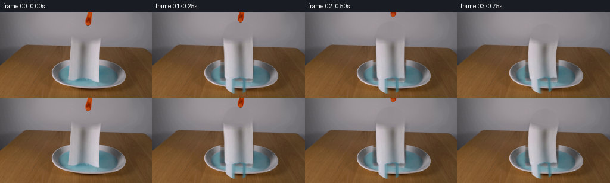
展开代码变化
--- 上一保存版本
+++ 本次保存版本
@@ -28,6 +28,11 @@
"""Remove the two moving objects while preserving the locked photographic plate."""
base = src.copy().astype(np.float32)
# Row-wise continuation is especially stable for this shallow-depth, horizontal setup.
+ source_mask = make_source_alpha()
+ repair = cv2.dilate((source_mask*255).astype(np.uint8), np.ones((7,7),np.uint8)).astype(np.float32)/255
+ # separate small matte for the grabber
+ repair[:33,138:160] = 1
+ repair = cv2.GaussianBlur(repair,(0,0),1.1)
spans = []
for y in range(H):
if y <= 30:
@@ -43,28 +48,31 @@
for y, span in enumerate(spans):
if span is None: continue
x0,x1 = span
- L=max(0,x0-4); R=min(W-1,x1+4)
+ # Sample from the corresponding *visible* part of each scene surface,
+ # not from the white paper immediately beside the hole.
+ if 77 <= y <= 87:
+ L,R=103,193 # rear ceramic rim
+ elif 88 <= y <= 117:
+ L,R=99,198 # exposed liquid on either side
+ else:
+ L=max(0,x0-7); R=min(W-1,x1+7)
c0=src[y,L].astype(np.float32); c1=src[y,R].astype(np.float32)
xs=np.arange(x0,x1+1)
t=(xs-L)/(R-L)
vals=c0[None,:]*(1-t[:,None])+c1[None,:]*t[:,None]
# Continue weak local texture rather than leaving a conspicuously smooth stripe.
- if y >= 55 and y < 82:
+ if y >= 55 and y < 77:
texrow=src[y, max(0,L-18):L+1].astype(np.float32)
if len(texrow):
texture=texrow[(np.arange(len(xs))*5+2*y)%len(texrow)]
texture-=texture.mean(axis=0,keepdims=True)
vals += .18*texture
- if y >= 83:
+ if y >= 77:
# the center is water/ceramic: retain only fine photographic grain
vals += rng.normal(0,.45,vals.shape)
base[y,x0:x1+1]=vals
# Feather both repaired areas into neighboring pixels.
- repair=np.zeros((H,W),np.float32)
- for y,span in enumerate(spans):
- if span:
- repair[y,span[0]:span[1]+1]=1
- repair=cv2.GaussianBlur(repair,(0,0),1.6)[...,None]
+ repair=repair[...,None]
base=src.astype(np.float32)*(1-repair)+base*repair
return np.uint8(np.clip(base,0,255))
@@ -126,6 +134,9 @@
a=cv2.remap(source_alpha.astype(np.float32),mapx,mapy,cv2.INTER_LINEAR,
borderMode=cv2.BORDER_CONSTANT,borderValue=0)
a *= np.clip((hi-np.abs(lateral)+1.0)/1.25,0,1)
+ # Endpoint guard: nearest-line projection alone describes an infinite strip
+ # beyond the top and bottom tips. Euclidean distance gives proper soft caps.
+ a *= np.clip((hi-np.sqrt(best)+1.0)/1.25,0,1)
# Fold lighting travels with material coordinates. This adds volume without changing texture.
q=smoothstep(p)
fold=(2.5*np.sin(4*np.pi*v+0.7)+1.7*np.sin(7*np.pi*v+1.5))*q
候选 03播放与检查图
点击播放 · 原生 RGB 像素
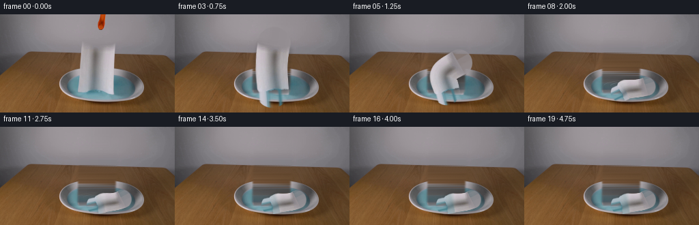
展开代码变化
--- 上一保存版本
+++ 本次保存版本
@@ -71,6 +71,24 @@
# the center is water/ceramic: retain only fine photographic grain
vals += rng.normal(0,.45,vals.shape)
base[y,x0:x1+1]=vals
+ # The central dish was fully occluded. Reconstruct its cross-section from
+ # the visible concentric ellipses: rear steel lip, cyan liquid, front lip.
+ # Piecewise color anchors avoid dragging wood grain through the bowl.
+ dish_anchors = [
+ (78,(103,75,49)), (80,(104,77,53)), (82,(90,88,87)),
+ (85,(132,132,133)), (88,(160,160,162)), (91,(112,128,133)),
+ (94,(82,137,148)), (99,(78,143,155)), (106,(78,146,157)),
+ (112,(83,147,158)), (114,(104,153,163)), (116,(173,177,181)),
+ (119,(207,205,210)), (122,(145,130,116)),
+ ]
+ ay=np.array([a[0] for a in dish_anchors],np.float32)
+ ac=np.array([a[1] for a in dish_anchors],np.float32)
+ for y in range(78,119):
+ col=np.array([np.interp(y,ay,ac[:,k]) for k in range(3)],np.float32)
+ xs=np.arange(111,176)
+ # subtle room-light gradient, consistent with the visible water
+ grad=((xs-143)/65.)[:,None]*np.array([-4.,-3.,-2.])[None,:]
+ base[y,111:176]=col+grad
# Feather both repaired areas into neighboring pixels.
repair=repair[...,None]
base=src.astype(np.float32)*(1-repair)+base*repair
候选 04播放与检查图
候选 05播放与检查图
点击播放 · 原生 RGB 像素
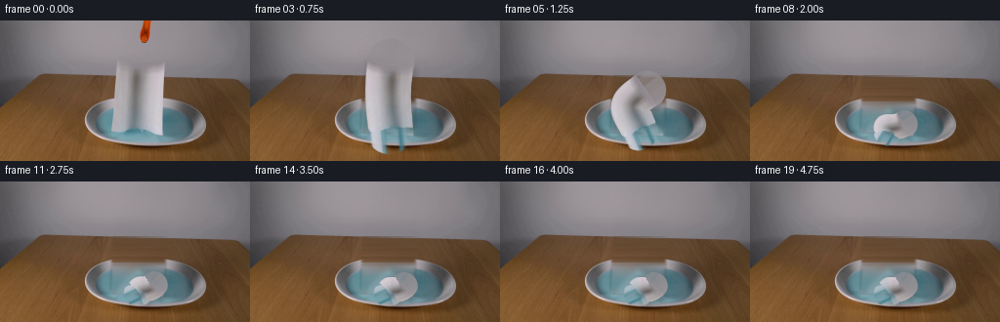
展开代码变化
--- 上一保存版本
+++ 本次保存版本
@@ -71,24 +71,12 @@
# the center is water/ceramic: retain only fine photographic grain
vals += rng.normal(0,.45,vals.shape)
base[y,x0:x1+1]=vals
- # The central dish was fully occluded. Reconstruct its cross-section from
- # the visible concentric ellipses: rear steel lip, cyan liquid, front lip.
- # Piecewise color anchors avoid dragging wood grain through the bowl.
- dish_anchors = [
- (78,(103,75,49)), (80,(104,77,53)), (82,(90,88,87)),
- (85,(132,132,133)), (88,(160,160,162)), (91,(112,128,133)),
- (94,(82,137,148)), (99,(78,143,155)), (106,(78,146,157)),
- (112,(83,147,158)), (114,(104,153,163)), (116,(173,177,181)),
- (119,(207,205,210)), (122,(145,130,116)),
- ]
- ay=np.array([a[0] for a in dish_anchors],np.float32)
- ac=np.array([a[1] for a in dish_anchors],np.float32)
- for y in range(78,119):
- col=np.array([np.interp(y,ay,ac[:,k]) for k in range(3)],np.float32)
- xs=np.arange(111,176)
- # subtle room-light gradient, consistent with the visible water
- grad=((xs-143)/65.)[:,None]*np.array([-4.,-3.,-2.])[None,:]
- base[y,111:176]=col+grad
+ # Inside the bowl, radial inpainting extrapolates the exposed cyan liquid
+ # and curved steel rim much more naturally than horizontal continuation.
+ imask=cv2.dilate((source_mask*255).astype(np.uint8),np.ones((11,11),np.uint8))
+ dish_fill=cv2.inpaint(src,imask,7,cv2.INPAINT_TELEA).astype(np.float32)
+ dish_mix=(repair*smoothstep((np.arange(H)[:,None]-79)/9))[...,None]
+ base=base*(1-dish_mix)+dish_fill*dish_mix
# Feather both repaired areas into neighboring pixels.
repair=repair[...,None]
base=src.astype(np.float32)*(1-repair)+base*repair
@@ -112,7 +100,7 @@
"""Material centreline, top-to-bottom. Bottom first contacts and stays in the dish."""
q=smoothstep(p)
# upper edge swings right while gravity shortens the projected sheet
- top=np.array([143.2 + 35.0*q, 39.0 + 67.0*q + settle],np.float32)
+ top=np.array([143.2 + 14.0*q, 39.0 + 67.0*q + settle],np.float32)
bottom=np.array([142.5 - 2.0*q, 112.0 + 1.5*q + .25*settle],np.float32)
vv=np.linspace(0,1,301,dtype=np.float32)
C=top[None,:]*(1-vv[:,None])+bottom[None,:]*vv[:,None]
候选 06播放与检查图
点击播放 · 原生 RGB 像素
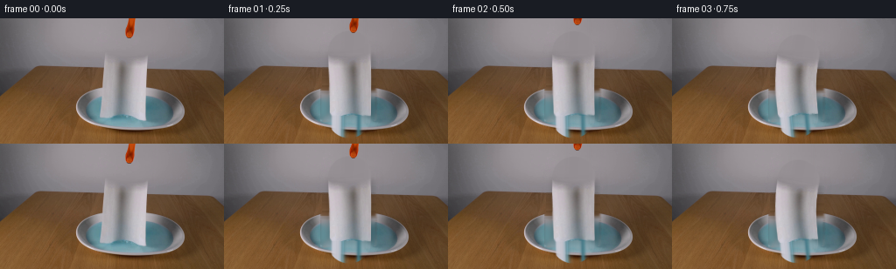
展开代码变化
--- 上一保存版本
+++ 本次保存版本
@@ -29,7 +29,8 @@
base = src.copy().astype(np.float32)
# Row-wise continuation is especially stable for this shallow-depth, horizontal setup.
source_mask = make_source_alpha()
- repair = cv2.dilate((source_mask*255).astype(np.uint8), np.ones((7,7),np.uint8)).astype(np.float32)/255
+ # Wide enough to include the source photograph's defocused white edge halo.
+ repair = cv2.dilate((source_mask*255).astype(np.uint8), np.ones((15,15),np.uint8)).astype(np.float32)/255
# separate small matte for the grabber
repair[:33,138:160] = 1
repair = cv2.GaussianBlur(repair,(0,0),1.1)
可观测工具轨迹
实际执行的命令与返回图片。
命令 1exit 0
/bin/bash -lc "cat prompt.txt && printf '\\n--- GENERATION RULES ---\\n' && cat GENERATION_RULES.md"
命令 2exit 1
/bin/bash -lc "find . -maxdepth 2 -type f -printf '%p\\n' | sort && printf '\\n--- binaries ---\\n' && command -v ffmpeg && command -v python3"
命令 3exit 0
/bin/bash -lc "python3 - <<'PY'
from PIL import Image
im=Image.open('first_frame.png')
print(im.mode, im.size)
PY"命令 4exit 0
/bin/bash -lc 'cat artifact_io.py'
命令 5exit 0
/bin/bash -lc "which ffmpeg || true; which python3 || true; python3 - <<'PY' mods=['PIL','numpy','cv2','imageio','scipy'] for m in mods: try: x=__import__(m); print(m,'OK',getattr(x,'__version__','')) except Exception as e: print(m,'NO',e) PY"
命令 6exit 0
/bin/bash -lc "cat > generate.py <<'PY'
from pathlib import Path
import numpy as np
import cv2
from PIL import Image, ImageDraw
import artifact_io
ROOT = Path(__file__).resolve().parent
W, H = 256, 144
def smoothstep(x):
x = np.clip(x, 0.0, 1.0)
return x*x*(3.0-2.0*x)
def soft_polygon(points, blur=0.65):
s = 4
m = np.zeros((H*s, W*s), np.uint8)
pts = np.round(np.asarray(points)*s).astype(np.int32)
cv2.fillPoly(m, [pts], 255)
m = cv2.resize(m, (W,H), interpolation=cv2.INTER_AREA)
if blur:
m = cv2.GaussianBlur(m, (0,0), blur)
return m.astype(np.float32)/255.0
def reconstruct_background(src):
\"\"\"Remove the two moving objects while preserving the locked photographic plate.\"\"\"
base = src.copy().astype(np.float32)
# Row-wise continuation is especially stable for this shallow-depth, horizontal setup.
spans = []
for y in range(H):
if y <= 30:
spans.append((139,158))
elif 34 <= y <= 118:
# follows the actual soft paper silhouette, with room for its cast shadow
if y < 42: spans.append((115,171))
elif y < 79: spans.append((112,173))
else: spans.append((110,175))
else:
spans.append(None)
rng = np.random.default_rng(128)
for y, span in enumerate(spans):
if span is None: continue
x0,x1 = span
L=max(0,x0-4); R=min(W-1,x1+4)
c0=src[y,L].astype(np.float32); c1=src[y,R].astype(np.float32)
xs=np.arange(x0,x1+1)
t=(xs-L)/(R-L)
vals=c0[None,:]*(1-t[:,None])+c1[None,:]*t[:,None]
# Continue weak local texture rather than leaving a conspicuously smooth stripe.
if y >= 55 and y < 82:
texrow=src[y, max(0,L-18):L+1].astype(np.float32)
if len(texrow):
texture=texrow[(np.arange(len(xs))*5+2*y)%len(texrow)]
texture-=texture.mean(axis=0,keepdims=True)
vals += .18*texture
if y >= 83:
# the center is water/ceramic: retain only fine photographic grain
vals += rng.normal(0,.45,vals.shape)
base[y,x0:x1+1]=vals
# Feather both repaired areas into neighboring pixels.
repair=np.zeros((H,W),np.float32)
for y,span in enumerate(spans):
if span:
repair[y,span[0]:span[1]+1]=1
repair=cv2.GaussianBlur(repair,(0,0),1.6)[...,None]
base=src.astype(np.float32)*(1-repair)+base*repair
return np.uint8(np.clip(base,0,255))
def make_source_alpha():
# Careful silhouette tracing of the towel in frame zero.
return soft_polygon([(119,38.5),(168.5,39.5),(168,57),(166.5,76),
(166,109),(163,114),(155,115),(146,112.5),
(139,111),(133,114),(126,112),(119,113),
(116.5,108),(117,84),(118.5,61)], .55)
def composite(dst, rgb, alpha):
a=np.clip(alpha,0,1)[...,None]
return dst*(1-a)+rgb*a
def curve_for_progress(p, settle=0.0):
\"\"\"Material centreline, top-to-bottom. Bottom first contacts and stays in the dish.\"\"\"
q=smoothstep(p)
# upper edge swings right while gravity shortens the projected sheet
top=np.array([143.2 + 35.0*q, 39.0 + 67.0*q + settle],np.float32)
bottom=np.array([142.5 - 2.0*q, 112.0 + 1.5*q + .25*settle],np.float32)
vv=np.linspace(0,1,301,dtype=np.float32)
C=top[None,:]*(1-vv[:,None])+bottom[None,:]*vv[:,None]
# transient S-buckle after release, becoming a shallow crumple on the water
buckle=np.array([-18.0*np.sin(np.pi*p)*(.35+.65*q)-3.0*q,
-5.2*np.sin(np.pi*p)+1.2*q],np.float32)
C += np.sin(np.pi*vv)[:,None]*buckle[None,:]
C[:,0] += (1.4*q)*np.sin(3*np.pi*vv)
C[:,1] += (1.0*q)*np.sin(2*np.pi*vv+0.5)
# Compute smooth local normal.
d=np.gradient(C,axis=0)
lens=np.maximum(np.linalg.norm(d,axis=1),1e-5)
N=np.stack([-d[:,1]/lens,d[:,0]/lens],axis=1)
# Sheet width is projected narrower as it turns toward horizontal and creases.
half=(24.7*(1-q)+14.0*q)*(1-.06*np.sin(2*np.pi*vv+0.4)*q)
return vv,C,N,half
def warp_towel(src, source_alpha, p, settle=0.0, wet=0.0):
vv,C,N,half=curve_for_progress(p,settle)
yy,xx=np.mgrid[0:H,0:W].astype(np.float32)
# nearest centreline sample, followed by local tangent projection
# (301*36864 remains small and gives clean flexible-body geometry)
best=np.full((H,W),1e12,np.float32)
idx=np.zeros((H,W),np.int16)
for i in range(len(vv)):
ds=(xx-C[i,0])**2+(yy-C[i,1])**2
take=ds<best
best[take]=ds[take]; idx[take]=i
ci=C[idx]; ni=N[idx]; hi=half[idx]
lateral=(xx-ci[...,0])*ni[...,0]+(yy-ci[...,1])*ni[...,1]
u=.5+lateral/(2*hi+1e-6)
v=vv[idx]
mapx=(118.5+49.5*u).astype(np.float32)
mapy=(39.0+74.0*v).astype(np.float32)
tex=cv2.remap(src,mapx,mapy,cv2.INTER_CUBIC,borderMode=cv2.BORDER_REFLECT_101).astype(np.float32)
a=cv2.remap(source_alpha.astype(np.float32),mapx,mapy,cv2.INTER_LINEAR,
borderMode=cv2.BORDER_CONSTANT,borderValue=0)
a *= np.clip((hi-np.abs(lateral)+1.0)/1.25,0,1)
# Fold lighting travels with material coordinates. This adds volume without changing texture.
q=smoothstep(p)
fold=(2.5*np.sin(4*np.pi*v+0.7)+1.7*np.sin(7*np.pi*v+1.5))*q
transverse=2.0*np.sin(2*np.pi*u+1.2)*q
shade=fold+transverse
tex += shade[...,None]
# Water wicks into the material from its lower edge and blue-tints contact regions.
if wet>0:
wetfront=np.clip((v-(.98-.47*wet))/.16,0,1)*wet
blue=np.array([88,151,157],np.float32)
tex=tex*(1-.23*wetfront[...,None])+blue*.23*wetfront[...,None]
tex -= (3.0*wetfront)[...,None]
return np.clip(tex,0,255), np.clip(a,0,1), (C,N,half)
def towel_shadow(curve, p):
C,N,half=curve
# projected soft shadow beneath the flexible sheet
poly=[]
for i in range(0,len(C),10): poly.append(C[i]+N[i]*(half[i]+1.5))
for i in range(len(C)-1,-1,-10): poly.append(C[i]-N[i]*(half[i]+1.5))
m=soft_polygon([(float(x+1.8),float(y+2.5)) for x,y in poly],0)
m=cv2.GaussianBlur(m,(0,0),2.8)
# strongest once the sheet is close to the dish
return m*(.12+.11*smoothstep(p))
def draw_ripples(frame, amp, phase):
if amp <= .001: return frame
# Render at 4x for photographic anti-aliasing, clipped to the visible water ellipse.
S=4
overlay=np.zeros((H*S,W*S,4),np.uint8)
d=ImageDraw.Draw(Image.fromarray(overlay),'RGBA')
# use OpenCV directly for smooth elliptical highlights/shadows
rgba=overlay
center=(147*S,105*S)
for k in range(3):
r=9+10*k+phase*4
axes=(int(r*S),int((3.0+2.2*k+phase)*S))
a=int(np.clip(amp*(48-8*k),0,50))
cv2.ellipse(rgba,center,axes,0,188,352,(207,242,240,a),1*S,cv2.LINE_AA)
cv2.ellipse(rgba,(center[0],center[1]+S),axes,0,8,172,(39,102,111,a//2),1*S,cv2.LINE_AA)
rgba=cv2.resize(rgba,(W,H),interpolation=cv2.INTER_AREA)
# mask to water interior
y,x=np.mgrid[0:H,0:W]
water=(((x-148)/51.)**2+((y-105)/18.)**2 <= 1).astype(np.float32)
a=(rgba[...,3].astype(np.float32)/255*water)[...,None]
return frame*(1-a)+rgba[...,:3].astype(np.float32)*a
def shifted_grabber(src, dy):
# Saturated orange/black tip at the top; a soft chroma-derived matte retains edge pixels.
yy,xx=np.mgrid[0:H,0:W]
region=(yy<30)&(xx>=139)&(xx<=158)
rgb=src.astype(np.float32)
chroma=rgb.max(2)-rgb.min(2)
orange=(rgb[...,0]-rgb[...,2])
mask=region*np.clip((chroma-7)/20,0,1)*np.clip((orange-5)/35,0,1)
# include dark central jaw only where surrounded by orange
dil=cv2.dilate(mask.astype(np.float32),np.ones((5,5),np.uint8))
dark=region*(rgb.mean(2)<70)*dil
mask=np.maximum(mask,dark*.75)
mask=cv2.GaussianBlur(mask.astype(np.float32),(0,0),.45)
M=np.float32([[1,0,0],[0,1,dy]])
tex=cv2.warpAffine(rgb,M,(W,H),flags=cv2.INTER_CUBIC,borderMode=cv2.BORDER_CONSTANT)
a=cv2.warpAffine(mask,M,(W,H),flags=cv2.INTER_LINEAR,borderMode=cv2.BORDER_CONSTANT)
return tex,a
def main():
src=np.array(Image.open(ROOT/'first_frame.png').convert('RGB'),dtype=np.uint8)
base=reconstruct_background(src)
source_alpha=make_source_alpha()
frames=[src.copy()]
# Hand-tuned real-time progression: release, gravity-driven buckle, impact, damping.
progresses=[0.0, .045, .14, .29, .48, .67, .82, .93, 1.0,
1.0,1.0,1.0,1.0,1.0,1.0,1.0,1.0,1.0,1.0]
for fi,p in enumerate(progresses, start=1):
out=base.astype(np.float32)
# expanding wave after first impact, then rapid viscous damping
impact=max(0,fi-7)
amp=(np.exp(-.34*impact) if fi>=7 else 0.0)
out=draw_ripples(out,amp,impact*.46)
# Sub-pixel rebound of wet towel after impact.
settle=0.0
if fi>=8:
t=fi-8
settle=2.2*np.exp(-.35*t)*np.sin(1.55*t)
wet=np.clip((fi-6)/10,0,1)
tex,a,curve=warp_towel(src,source_alpha,p,settle,wet)
sh=towel_shadow(curve,p)
out*=1-sh[...,None]
out=composite(out,tex,a)
# The grabber retracts cleanly upward immediately after release.
if fi<=3:
dy={1:-6,2:-15,3:-25}[fi]
gt,ga=shifted_grabber(src,dy)
out=composite(out,gt,ga)
frames.append(np.uint8(np.clip(out,0,255)))
arr=np.stack(frames,axis=0)
assert arr.shape==(20,144,256,3) and arr.dtype==np.uint8
assert np.array_equal(arr[0],src)
artifact_io.save(arr,ROOT)
if __name__=='__main__':
main()
PY
python3 generate.py
python3 - <<'PY'
import numpy as np
from PIL import Image
z=np.load('pixels.npz')['pixels']
print('pixels',z.shape,z.dtype)
a=np.array(Image.open('frames/00.png')); b=np.array(Image.open('first_frame.png'))
print('frame0 exact',np.array_equal(a,b),'maxdiff',np.abs(a.astype(int)-b.astype(int)).max())
PY"命令 7exit 0
/bin/bash -lc "python3 - <<'PY'
from PIL import Image
im=Image.open('first_frame.png')
im.crop((75,70,220,135)).resize((870,390)).save('.tmp/crop.png')
PY"命令 8exit 0
/bin/bash -lc 'python3 generate.py'
命令 9exit 0
/bin/bash -lc "python3 - <<'PY'
import generate
from PIL import Image
import numpy as np
s=np.array(Image.open('first_frame.png'))
b=generate.reconstruct_background(s)
Image.fromarray(b).save('.tmp/base.png')
for y in range(72,123,5):
print(y, 'src99',s[y,99], 'src103',s[y,103], 'base143',b[y,143], 'src193',s[y,193], 'src198',s[y,198])
PY"命令 10exit 0
/bin/bash -lc "python3 - <<'PY'
import cv2, numpy as np
from PIL import Image
import generate
s=np.array(Image.open('first_frame.png'))
a=generate.make_source_alpha()
for dil,r in [(11,7),(21,10),(31,15)]:
m=cv2.dilate((a*255).astype(np.uint8),np.ones((dil,dil),np.uint8))
m[:34,135:163]=255
# only towel bounds no cast shadow extension broad
b=cv2.inpaint(s,m,r,cv2.INPAINT_TELEA)
Image.fromarray(b).save(f'.tmp/inp{dil}.png')
PY"命令 11exit 0
/bin/bash -lc "python3 generate.py && python3 - <<'PY'
from PIL import Image
import numpy as np, generate
s=np.array(Image.open('first_frame.png')); Image.fromarray(generate.reconstruct_background(s)).save('.tmp/base2.png')
PY"命令 12exit 0
/bin/bash -lc "python3 generate.py && python3 - <<'PY'
from PIL import Image
import numpy as np, generate
s=np.array(Image.open('first_frame.png')); Image.fromarray(generate.reconstruct_background(s)).save('.tmp/base3.png')
PY"命令 13exit 0
/bin/bash -lc "python3 generate.py
python3 - <<'PY'
from pathlib import Path
import numpy as np
from PIL import Image
src=np.array(Image.open('first_frame.png').convert('RGB'))
fs=[]
for p in sorted(Path('frames').glob('*.png')): fs.append(np.array(Image.open(p).convert('RGB')))
a=np.stack(fs)
print('shape/dtype',a.shape,a.dtype)
print('frame0_exact',np.array_equal(a[0],src))
print('unique_frames',len({x.tobytes() for x in a}))
print('mean consecutive deltas',[round(float(np.abs(a[i].astype(int)-a[i-1].astype(int)).mean()),2) for i in range(1,20)])
print('outputs',[(p.name,p.stat().st_size) for p in [Path('pixels.npz'),Path('index.html'),Path('inspection.png'),Path('transition_check.png')]])
PY"视觉工具实际返回图片 1

视觉工具实际返回图片 2
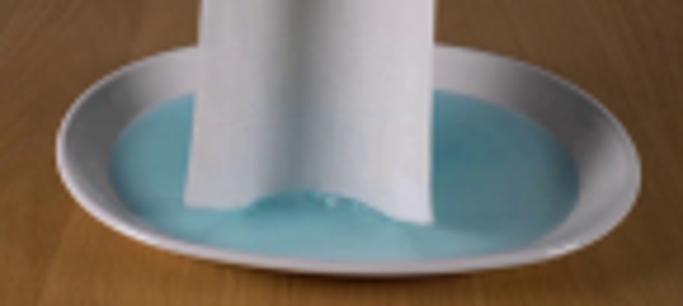
视觉工具实际返回图片 3

视觉工具实际返回图片 4
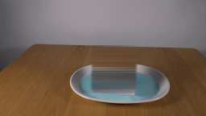
视觉工具实际返回图片 5
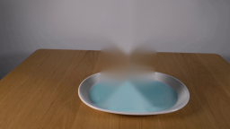
视觉工具实际返回图片 6
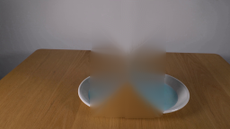
视觉工具实际返回图片 7
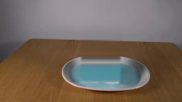
视觉工具实际返回图片 8

视觉工具实际返回图片 9
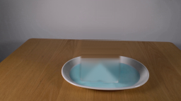
视觉工具实际返回图片 10

视觉工具实际返回图片 11
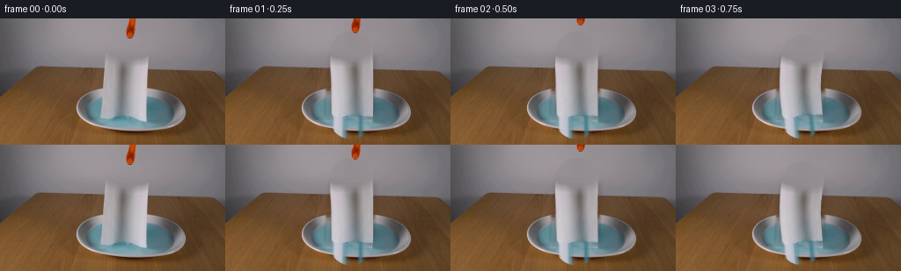
保存候选 6 份；完成命令 13 次；可验证图片返回 11 张。原始 API 响应与完整日志保留在本地。